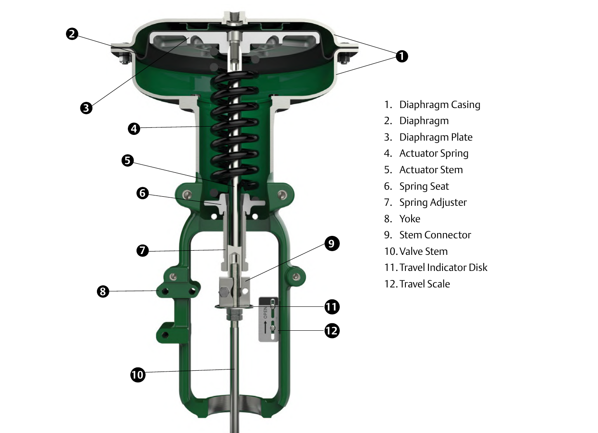
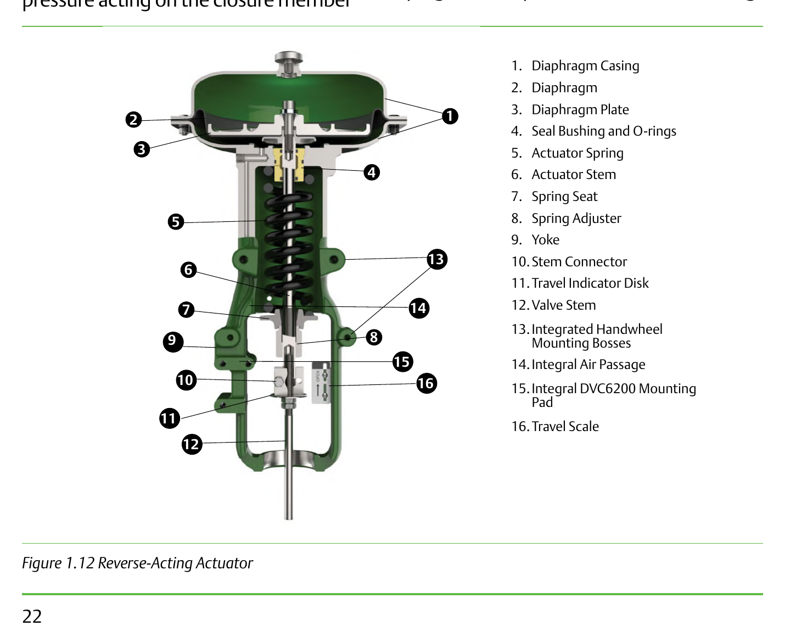
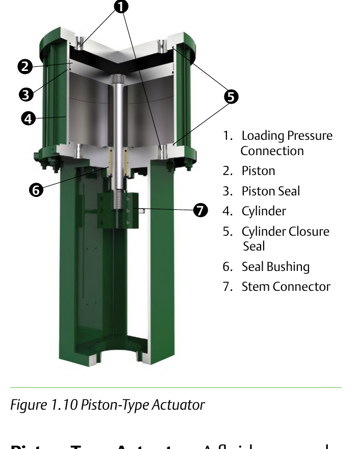

Direct-Acting, Reverse-Acting & Piston Actuators

Loading pressure enters above the diaphragm and pushes the stem down; the spring returns the stem on loss of air. The baseline spring-and-diaphragm construction.
Same spring-and-diaphragm principle, action reversed — the stem retracts as loading pressure increases. A seal bushing in the yoke keeps loading pressure off the stem.
Trades the spring for a second pressure connection on the piston — higher thrust and faster stroking than a spring-and-diaphragm design.After Control Valve Handbook, 6th ed., Figs. 1.9, 1.10, 1.12 — used directly, each figure's own printed numbers retained. Component Index: cvh-cmp-direct-acting-actuator, cvh-cmp-piston-actuator, cvh-cmp-reverse-acting-actuator.